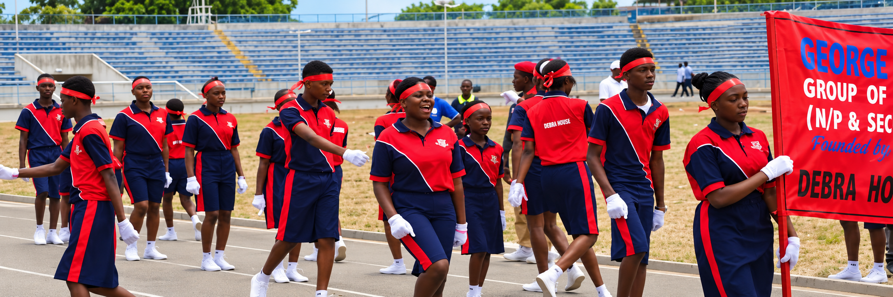

Team Sports
Field & Court Games
Students compete actively in football, basketball, volleyball, table tennis, badminton, and relay racing, developing stamina, tactical thinking, and cooperative teamwork under professional coaching.